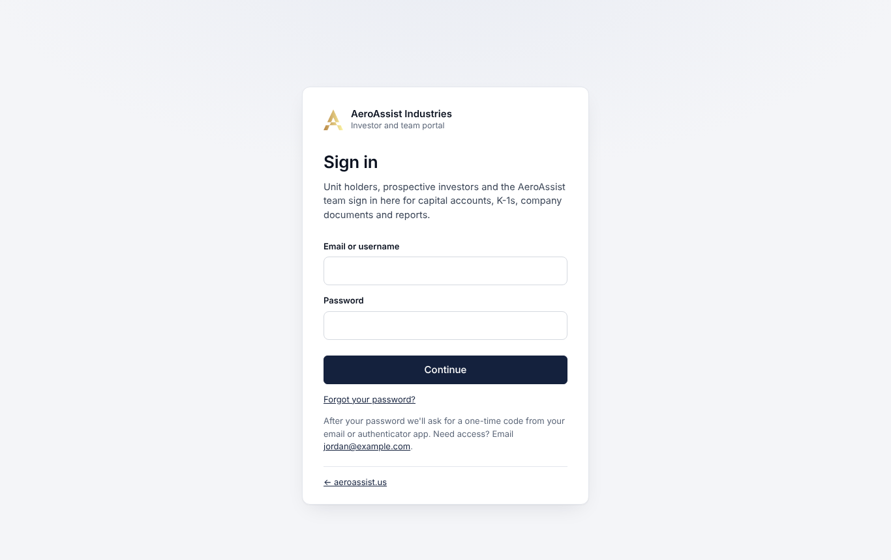
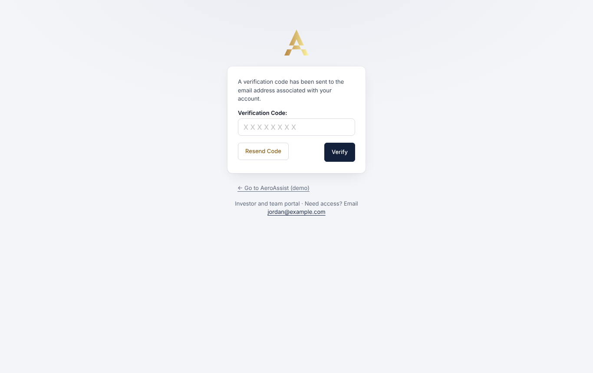
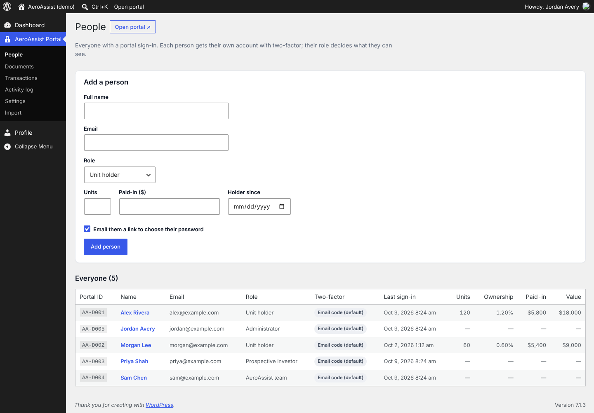
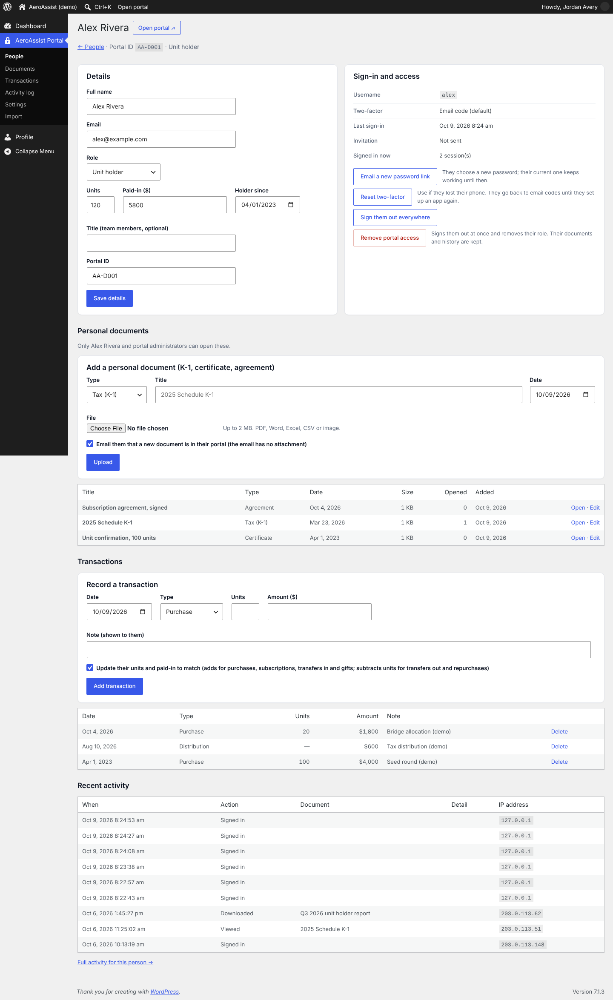
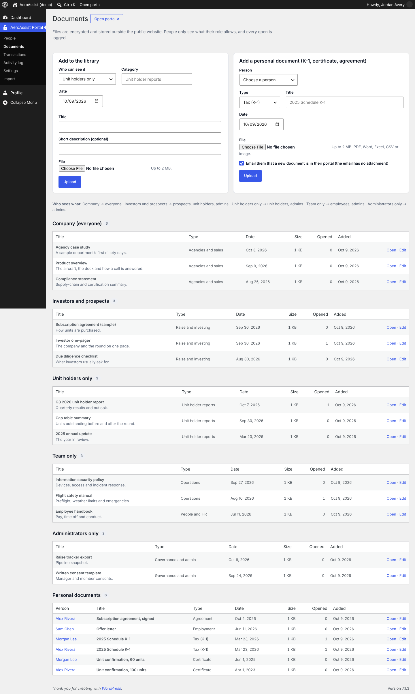
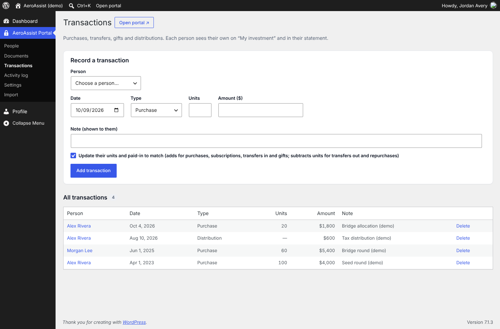
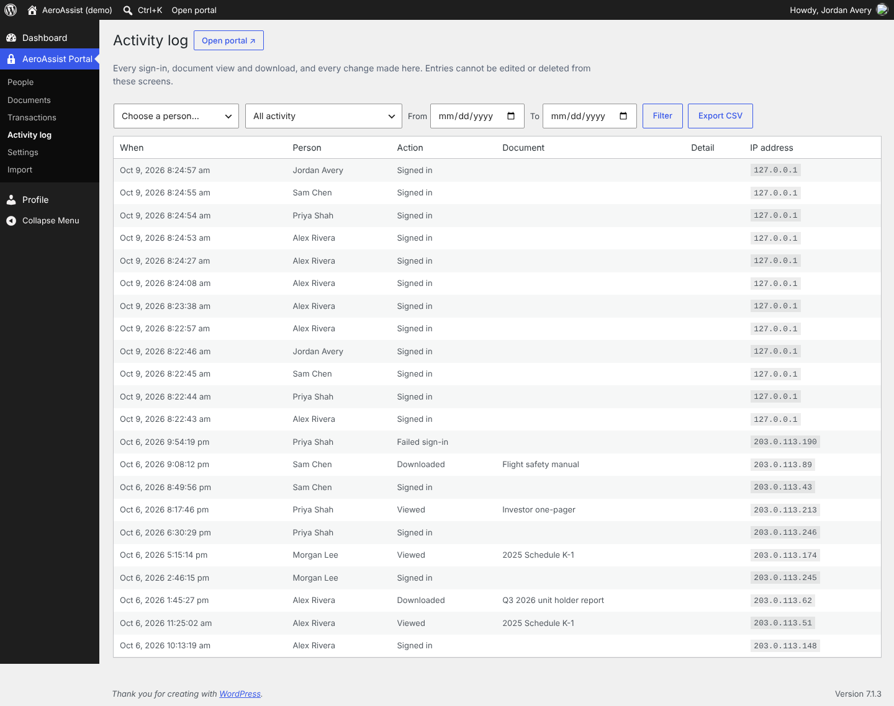
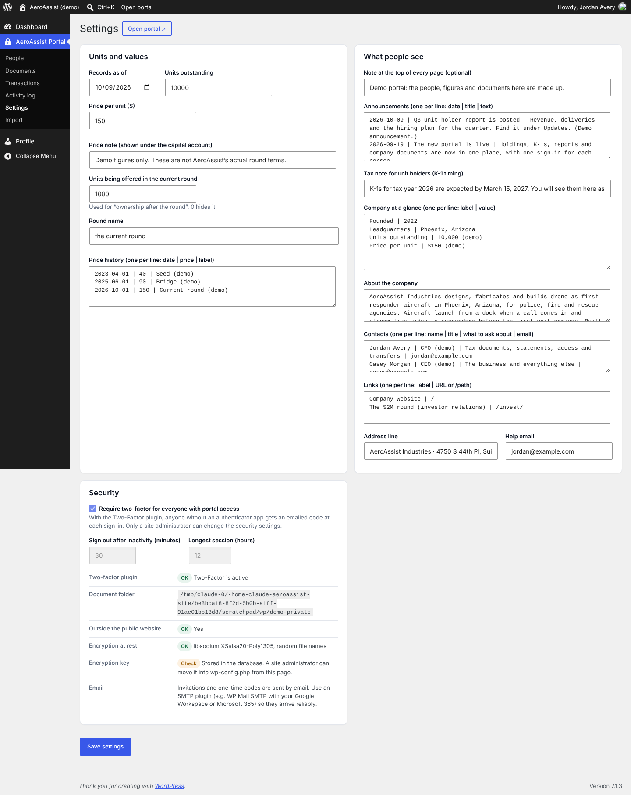

Portal demo · WordPress admin
Jay’s admin screens
Screenshots from the plugin running on a test WordPress site with made-up people and documents. On aeroassist.us these live under wp-admin → AeroAssist Portal.
Sign in
Everyone signs in with their own email and password at /portal/.

One-time code
Then a one-time code from their email or authenticator app. Nobody can skip this step. People can add an authenticator app and backup codes from their profile.

People
Everyone with a sign-in, their role, two-factor method, last sign-in and holdings. Adding a person emails them a link to choose their password.

One person
Edit details, email a new password link, reset two-factor after a lost phone, sign them out everywhere or remove access instantly. Upload their K-1 and record transactions here too.

Documents
Upload to the library by audience (everyone, investors and prospects, unit holders, team, administrators) or to one person. Files are encrypted and stored outside the public website; the Opened column counts views and downloads.

Transactions
Purchases, transfers, gifts and distributions. Each person sees theirs on My investment and in their PDF statement.

Activity log
Every sign-in, failed sign-in, view, download and administrator change, with filters and CSV export.

Settings
Unit price and history, announcements, tax note, company facts and contacts, plus the security checks.
